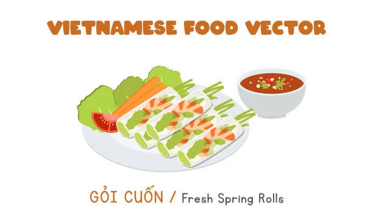
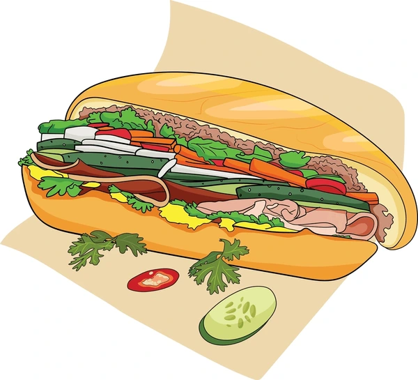

Pho

Rich broth, tender beef, and rice noodles. A Vietnamese classic.
Gỏi Cuốn
Fresh, light, and easy to make. A great starter or snack.
bánh mì
Crispy baguette, savory meat, and crunchy pickled veggies.
Simple steps + local ingredients = delicious results
Want to make delicious Vietnamese food at home without stress? You're in the right place. Whether you're a college student, a busy parent, or just new to Vietnamese cuisine, this site gives you simple, step-by-step recipes using ingredients you can find at your local store.
Rich broth, tender beef, and rice noodles. A Vietnamese classic.
Fresh, light, and easy to make. A great starter or snack.
Crispy baguette, savory meat, and crunchy pickled veggies.